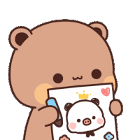

I'M SORRY I CAN'T LOSE YOU ENES
Dear Enes 💌
My Sincere Apologies I hope this message finds you well. I want to start by saying how truly sorry I am. I realize that my misunderstanding has caused unnecessary tension between us, and that’s the last thing I ever wanted. It was never my intention to hurt you or make you feel uncertain about us. I want to sincerely apologize for I'm sorry I misunderstood you. I'm sorry for my trust issues. I'm sorry I messed everything up. The thing is i really love you and sorry for did not ask clarification and blocked you. I realize that my actions may have hurt you or caused inconvenience, and for that, I am truly sorry. Anyway, Happy valentine's day sayangku💗 ... 